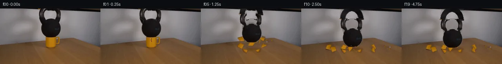

![首帧]()

Round 00
2026-11-05T14:26:27.327581+00:00像素候选变化代码 +342/−0inspection 更新
pixels 56138ca301557696 · code 6be92f609a967ba8
查看本轮 generate.py 真实 diff
--- previous/generate.py +++ current/generate.py @@ -0,0 +1,342 @@ +#!/usr/bin/env python3 +"""Generate the 20-frame PixelWorld continuation using local pixel operations only.""" + +from pathlib import Path +import hashlib +import math + +import cv2 +import numpy as np +from PIL import Image, ImageDraw, ImageFont + +from artifact_io import save + + +ROOT = Path(__file__).resolve().parent +W, H = 256, 144 +EXT = 34 +EXPECTED_SOURCE_SHA256 = "b5895b1e5e8bb10a4cc5b6db58d6212c102af3d0f461c96437675d9eeb6b0955" + + +def alpha_over(dst, src, alpha): + """Composite RGB uint8 src over RGB uint8 dst using float alpha.""" + a = np.clip(alpha.astype(np.float32), 0.0, 1.0)[..., None] + return np.clip(src.astype(np.float32) * a + dst.astype(np.float32) * (1.0 - a), 0, 255).astype(np.uint8) + + +def polygon_mask(points, shape=(H, W)): + m = np.zeros(shape, np.uint8) + cv2.fillPoly(m, [np.asarray(points, np.int32)], 255, lineType=cv2.LINE_AA) + return m + + +def soft_mask(mask, sigma=0.55): + return cv2.GaussianBlur(mask.astype(np.float32) / 255.0, (0, 0), sigma) + + +def make_clean_plate(src): + """Analytically continue nearby wall/table colors under the two source objects.""" + clean = src.astype(np.float32).copy() + x0, x1 = 92, 166 + xs = np.arange(x0, x1 + 1, dtype=np.float32) + for y in range(0, 108): + # Robust side samples retain the source's row-dependent wall/table seam. + left = np.median(src[y, 84:94].astype(np.float32), axis=0) + right = np.median(src[y, 166:177].astype(np.float32), axis=0) + q = ((xs - x0) / (x1 - x0))[:, None] + row = left[None, :] * (1.0 - q) + right[None, :] * q + # Very low-amplitude deterministic texture prevents a visibly flat inpaint. + texture = (1.15 * np.sin(xs * 0.29 + y * 0.17) + 0.65 * np.sin(xs * 0.09 - y * 0.31))[:, None] + clean[y, x0:x1 + 1] = row + texture + return np.clip(clean, 0, 255).astype(np.uint8) + + +def make_kettle_layer(src): + """Extract the black kettlebell and extend its cropped handle above frame.""" + layer = np.zeros((H + EXT + 20, W, 3), np.uint8) + alpha = np.zeros((H + EXT + 20, W), np.float32) + layer[EXT:EXT + H] = src + + lum = cv2.cvtColor(src, cv2.COLOR_RGB2GRAY) + geometry = np.zeros((H, W), np.uint8) + body = np.array([ + [119, 24], [138, 24], [147, 30], [152, 38], [155, 48], + [154, 58], [150, 67], [143, 74], [117, 74], [111, 69], + [106, 61], [105, 49], [107, 39], [111, 31] + ], np.int32) + left_leg = np.array([[97, 0], [116, 0], [116, 22], [124, 29], [112, 32], [101, 24]], np.int32) + right_leg = np.array([[140, 0], [158, 0], [155, 25], [145, 32], [134, 28], [141, 21]], np.int32) + cv2.fillPoly(geometry, [body, left_leg, right_leg], 255) + + # Kettle pixels are far darker than the neutral backdrop. The geometry prevents + # unrelated top-edge darkness from becoming attached to the moving object. + raw = ((lum < 112) & (geometry > 0)).astype(np.uint8) * 255 + raw = cv2.morphologyEx(raw, cv2.MORPH_CLOSE, np.ones((3, 3), np.uint8)) + raw = cv2.GaussianBlur(raw, (0, 0), 0.58) + alpha[EXT:EXT + H] = raw.astype(np.float32) / 255.0 + + # The handle continues above the crop. Reconstruct that unseen portion as a + # shaded elliptical iron ring whose y=0 cross-section meets the measured legs. + for gy in range(-EXT, 1): + for x in range(92, 165): + outer = ((x - 128.0) / 30.0) ** 2 + ((gy - 3.0) / 35.0) ** 2 + inner = ((x - 128.0) / 17.2) ** 2 + ((gy - 5.0) / 23.2) ** 2 + if outer <= 1.0 and inner >= 1.0: + yy = gy + EXT + edge = min(max((1.0 - outer) * 15.0, 0.0), 1.0) + shade = 13.0 + 16.0 * max(0.0, 1.0 - abs(x - 108.0) / 24.0) + 4.0 * math.sin(gy * 0.37 + x * 0.11) … diff truncated; 255 more lines …